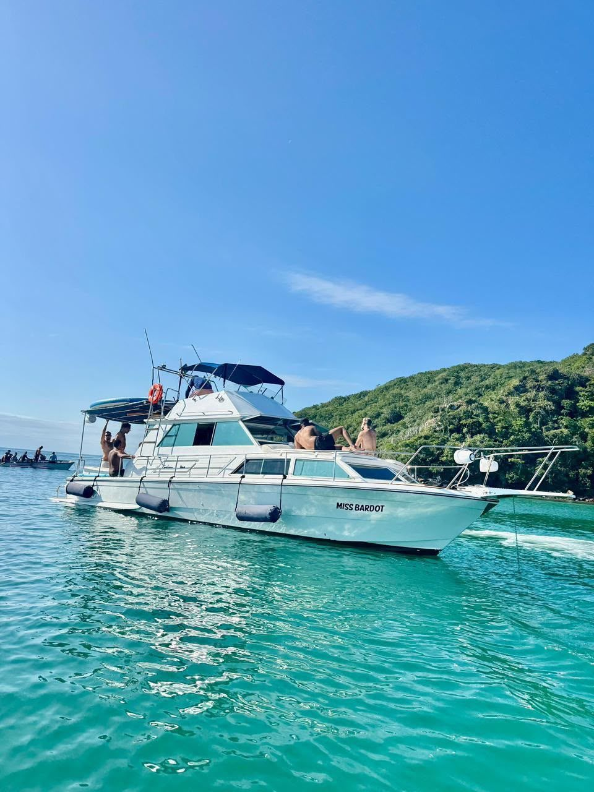
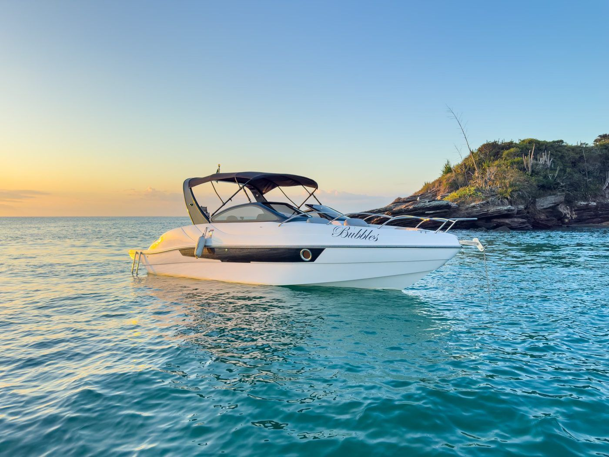

Tu día en el mar,
en todo Brasil.
Barcos con marinero, solo para tu grupo. Elige el destino, la fecha y cuántas personas van a bordo.
¿A dónde quieres ir?
Empezamos por Búzios. Los otros mares de Brasil abren uno a la vez, siempre con buenos barcos.

Embarque abiertoBúzios
Azeda, João Fernandes, Ilha Feia y Tartaruga. Salidas desde Praia dos Ossos.
Ver lanchas →Muy prontoArraial do Cabo
Pontal do Atalaia, Praia do Forno y la Gruta Azul.
Muy prontoCabo Frio
Ilha do Japonês, Praia do Forte e Ilha do Papagaio.
Muy prontoRio de Janeiro
La Bahía de Guanabara, las Islas Cagarras y el Pan de Azúcar.
Muy prontoAngra dos Reis
Lagoa Azul, Lagoa Verde y las islas de la bahía.
Muy prontoParaty
Saco do Mamanguá e islas de agua tranquila.
Cómo funciona
Reservar un barco tiene que ser tan simple como pedir un auto. Este es el camino, del primer clic al embarque.
Elige el destino
Dinos dónde, cuándo y cuántas personas van a bordo.
Compara barcos
Fotos, tamaño, qué incluye y el precio de cada uno.
Asegura la fecha
Una seña del 50% reserva el día. El resto se paga al embarcar.
Embarca
El marinero espera a tu grupo en el muelle, a la hora acordada.
¿Tienes un barco parado?
Puede convertirse en paseos e ingresos, sin que tengas que ocuparte de anuncios, atención o cobros.

¿Qué es Bordazul?
Una plataforma para alquilar barcos con marinero en los destinos náuticos de Brasil, con barcos de varios dueños en un solo lugar.
¿Dónde hay barcos hoy?
En Búzios, Río de Janeiro. Allí ves todas las lanchas, fotos y precios por temporada y reservas en línea. Los otros destinos abren poco a poco.
¿Todos los barcos tienen marinero?
Sí. Todos los paseos se hacen con marinero habilitado, y el barco es solo para tu grupo.
¿Cómo reservo?
Elige el barco, la fecha y el número de personas. La fecha queda asegurada con una seña del 50% y el resto se paga el día del paseo.
¿Cómo puedo pagar?
La seña se puede pagar por Pix para cualquier fecha y con tarjeta cuando faltan 5 días o más para el paseo.
¿Puedo anunciar mi barco?
Sí. El registro es online en bordazul.com.br/anunciar (en portugués): datos del barco, documentos, fotos, tu precio y el término firmado por WhatsApp. El equipo revisa cada barco antes de publicarlo.
¿Vamos a Búzios?
Lanchas de 22 a 35 pies, para hasta 16 personas, con paseos de 4 o 7 horas. La primera flota ya está en el agua. El resto de Brasil viene justo detrás.